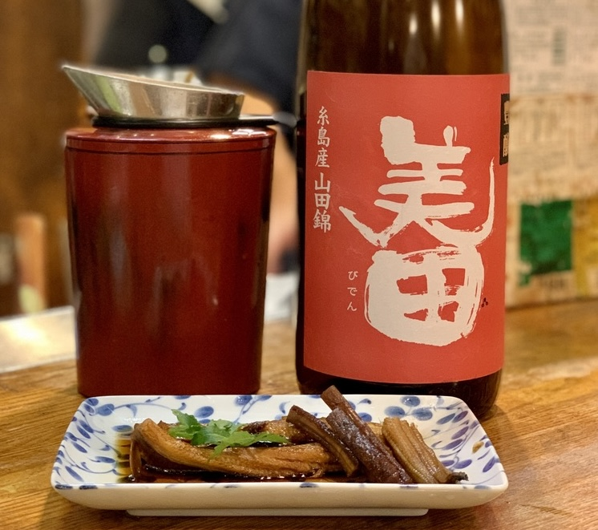
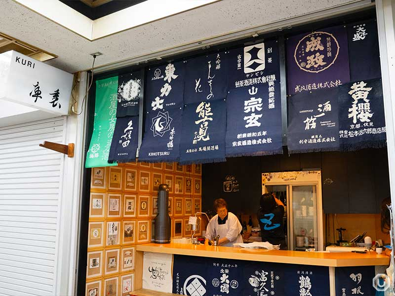
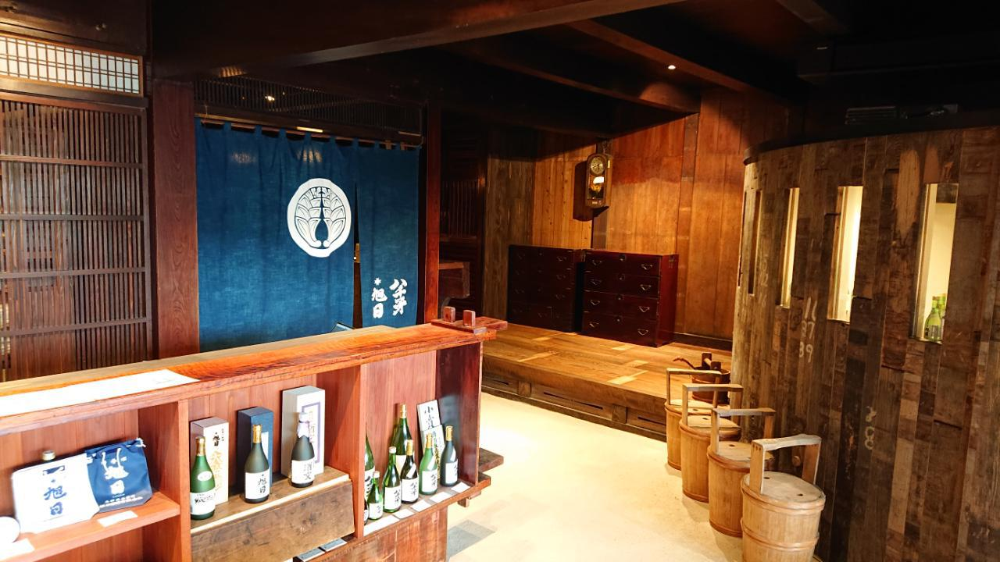
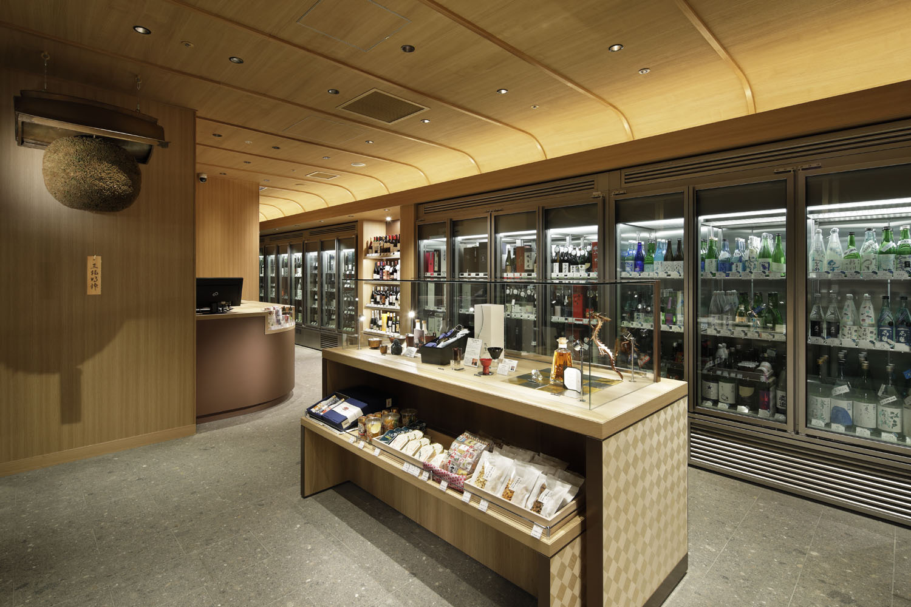
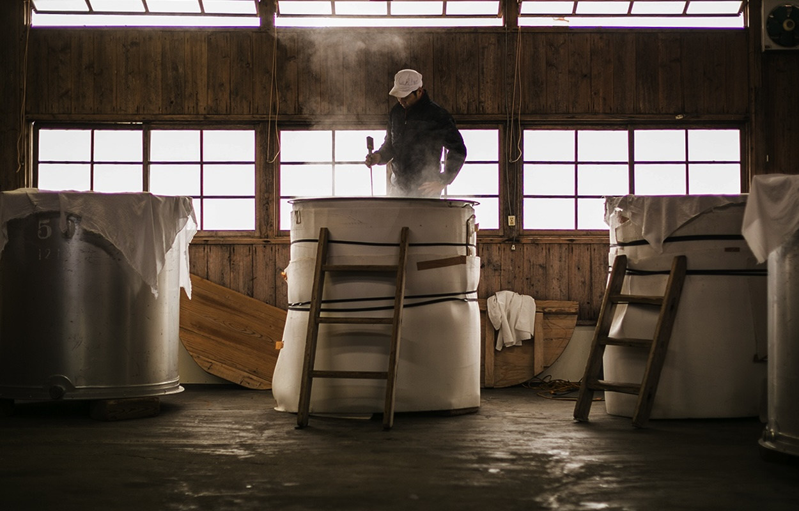

SAKEYŌ
Trips · Rung 06
Where you've been.
Twenty-three places across nine prefectures. The notes you took. The bottles you finished.
14
Wishlist
2
Trips
23
Passport
[ MAP — JAPAN, ALL VISITED ]
23
Places
9
Prefectures
47
Sake logged
Recent
2026
Mar
14
2026

Tokyo · Izakaya
Okagesan
Yotsuya1st visit2 hrs
Note
Sat at the far end of the counter. Chef brought the chalkboard, walked us through the seasonal stuff. The yawarimizu thing is real — actually noticeable in the glass. Try to come back in October for the hiyaoroshi.
What we drank
Senkin Modern Muku
Tedorigawa Yamahai Junmai
Kuheiji EAU DU DESIR
From SakeYō: Okagesan kept the star
3 photos
Feb
22
2026

Ishikawa · Brewery
Tedorigawa Brewery
Hakusan1st visit3 hrs
Note
Yasuyuki gave the tour himself. The koji room is colder than I expected. Bought a bottle of the unpasteurized junmai daiginjo direct — only sold at the kura. Worth the 45-minute drive from Kanazawa, especially if you can do it on a brewing day.
What we drank
Tedorigawa Yamahai Junmai (nama)
Tedorigawa Junmai Daiginjo
Added manually
5 photos
2025

Kuri
Nov '25

Nakajima Shoten
Oct '25

Ponshukan
Oct '25

Hasegawa Saketen
Oct '25

Kidoizumi Brewery
Sep '25

Shinkawaya
Sep '25
23 places · 9 prefectures · since June 2024